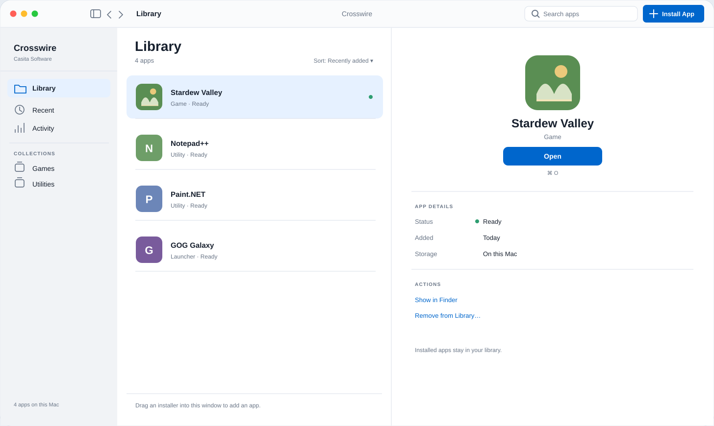

Your Windows
library, on Mac.
Install Windows programs and games, then open them from one library on your Mac.
Apple Silicon · macOS 14.6 or later

From installer to library.
Start with a Windows installer you already have.
- 1
Choose an installer
Select a Windows installer from your files.
- 2
Install the app
Follow the installer’s steps.
- 3
Open it from your library
Find your installed app and launch it.
A place for your Windows apps.
Browse your library and open an installed app.
Here’s the proposed interface in both appearances.
Check your Mac.
Then check your apps.
Compatibility varies by app and game.
Read the compatibility guide- Mac
- Apple Silicon
- macOS
- 14.6 or later
- Installer
- Windows .exe or .msi
Not every Windows app will run. Check the guide before downloading software for Crosswire.
A little help
getting started.
Read the documentation How do I get started?
Download Crosswire, open the disk image, and drag Crosswire to Applications. Open the app, complete any setup it requests, then choose your Windows installer.
On first launch, Crosswire may ask to install Rosetta 2, an Apple component. This needs an internet connection and takes a few minutes.
For setup and macOS security prompts, follow the getting started guide.
Where do I find an installer?
Get the Windows version from the software’s publisher or your game library. Choose the downloaded installer (.exe, .msi, .bat or .iso) in Crosswire.
What if an app does not open?
Use Launch with Diagnostics from the app’s page to capture a log. Read the troubleshooting guide for the next steps. Some apps and games are incompatible.
For bugs or feedback, contact Casita Software.
Your library starts here.
Bring a Windows installer. Give it a place on your Mac.
DownloadApple Silicon · macOS 14.6 or later